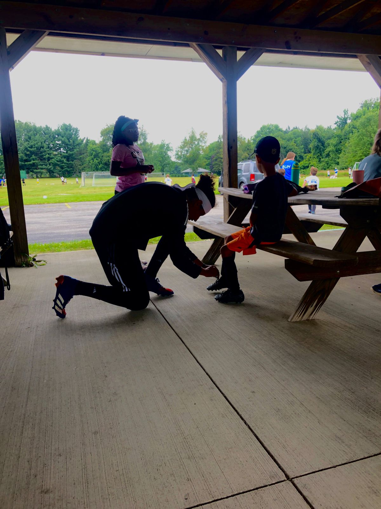
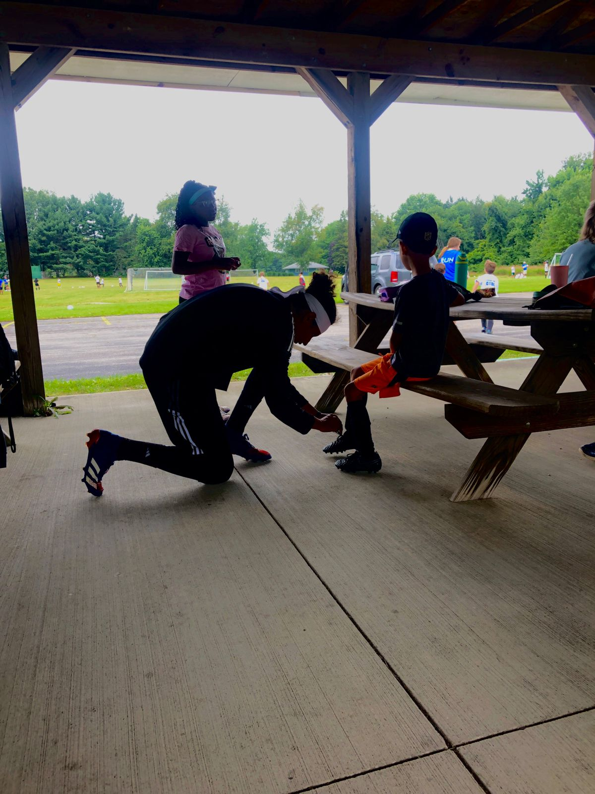

Isaac Hortiales Arzate
Correo: ryannutriales@gmail.com
Telefono: 2225356724
Ing. en Mecatrónica | Universidad Iberoamericana Puebla, México.
Voluntariado
- ¿Porque ser voluntario? -
Considero el futbol o cualquier forma de deporte como una forma de forjar el caracter, desarrollar habilidades y expresion de identidad. Durante gran parte de mi vida fui un estudiante atleta, brincando entre escuela y mi deporte, aprendi a organizar mis tiempos para poder cumplir en forma y tiempo en ambos frentes. El futbol me enseño a lidiar con la frustración, mostrar liderazgo y como trabajar en equipo para cumplir metas. Empece a ser voluntario siendo coach en los camps de verano que organizaba mi equipo "Ambassadors FC", donde aprendi el impacto que tiene un entrenador o figura de autoridad en el desarrollo de un niño. Todos los niños y niñas tienen habilidades distintas y se les debe enseñar como hacer uso de ellas sin desanimarlos y con valores. Mi filosofía como coach es ser para ellos el coach que me hubiera gustado tener de niño, no alguien que me enseñara a ser el mejor deportista sino a ser un buen deportista, con valores y siempre buscando la mejora continua. Todos merecen disfrutar de su pasion, sea un deporte o un arte, por ello mi tiempo con "Topos Puebla" fue el principal detonante para desarrollar mi proyecto de titulación, en el cual pude combinar mis 2 pasiones.
Ambassadors Football Club

 
Topos Puebla